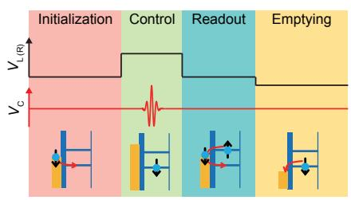
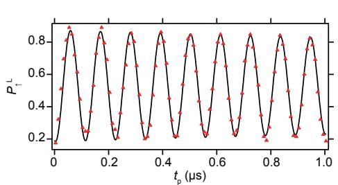
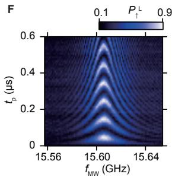
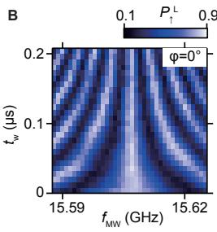
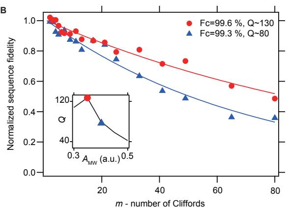
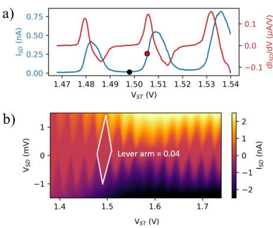
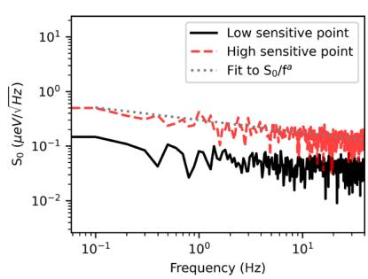
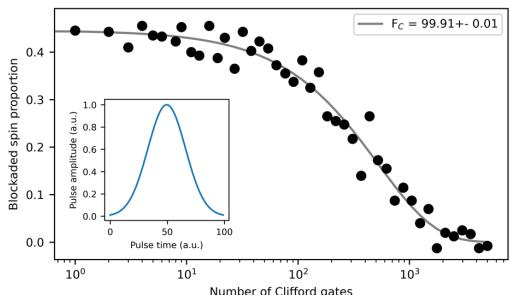

通用框架
单自旋比特的自由哈密顿量是塞曼项 。要实现任意单比特门 ，需要在时间 内引入一个可控的横向分量。通用做法是把哈密顿量写成
并按驱动方式分为两大类：共振驱动（加频率 的近共振交变场，转动坐标系下等效为绕 的连续旋转，门时长 ， 为 Rabi 角频率）与脉冲演化（关掉或改变 ，让自由进动积累相位，如 旋转用虚拟门实现）。任何单比特门都能由两根转轴（如 与 ）组合而成，因此实验上只需要稳定实现两种正交旋转。
驱动方案
磁偶极共振（ESR）
最直接的方案是电子自旋共振：在片上微波天线（一根穿过器件的金属线）中通频率 的射频电流，产生交变磁场 ，驱动能级间的磁偶极跃迁。Rabi 频率与交变场幅值成正比：
Koppens et al. (2006) 首次在 GaAs 双量子点中观测到单电子自旋的 Rabi 振荡：射频频率 10–750 MHz 范围内扫描出共振峰，1 μs 射频脉冲内观测到约 8 圈振荡，且 与 呈线性关系，确认了磁偶极驱动机制。该实验以等效自旋读出为背景，测得平均翻转角 131°（对应 180° 指令）的保真度约 73%——当时的瓶颈是核自旋噪声导致的退相干，而非驱动本身。
ESR 的优点是机制干净、对电荷噪声不敏感；缺点是磁场与栅压几乎正交，耦合弱，需要毫特斯拉级的 ，天线功耗与串扰（见读出串扰）随之上升。
电偶极自旋共振（EDSR）
用交变电场间接驱动自旋：让电子在空间上振荡，从而”感受”到磁场梯度或自旋轨道场。驱动强度可以比纯磁偶极高一到两个数量级，具体实现有三种：
- 倾斜塞曼场 / 微磁体：在器件附近放置微磁体，或在栅极不对称结构中利用界面斜坡，使塞曼能随电子位置变化（）。交变电场推动电子振荡时，共振频率被同步调制，等效出横向驱动项。这是 Veldhorst et al. (2015) 等硅 MOS 器件常用的路线；
- 强自旋轨道耦合：空穴自旋（尤其是锗空穴）自旋轨道耦合强到无需任何辅助结构即可电驱动。Hendrickx et al. (2020) 在平面锗双点中实现 Rabi 频率超过 100 MHz 的全电驱动单比特门（门时长约 10 ns 量级），单比特保真度 99.3%；
- g 因子调制：利用斯塔克效应，栅压连续调节有效 因子（进而调节共振频率），在共振点施加脉冲即可驱动旋转。它同时是电学寻址的手段：同一全局 ESR 天线下，用每个点的栅压把共振频率调到不同值（Veldhorst 2015 中 频差），实现”分址不开关”。
EDSR 的代价是电场同样耦合到电荷噪声通道：Rabi 频率越高、驱动越强，对电荷噪声与串扰越敏感。工程上在”快”与”稳”之间取折中（Noiri et al. (2022) 系统讨论了 Rabi 频率与耦合强度的工作区选择）。
交换 / 脉冲门（无需微波）
编码不是单自旋时，单比特门可以完全用直流脉冲实现：
- 单态–三重态比特 –：交换能 给出绕 的旋转、磁场梯度给出绕 的旋转，两者都是栅压脉冲（见单态–三重态量子比特）。门时间由 与梯度大小决定，典型为 10–100 ns；
- 共振交换比特（resonant exchange qubit）：三个电子编码，用交流交换或微波交换驱动旋转（见共振交换量子比特）；
- 几何/非绝热门：用 specially 设计的脉冲路径让态在参数空间走闭合回路积累几何相位（见几何量子门）。
这类”脉冲门”不需要微波链路，但要求高带宽、高精度的任意波形发生器，且交换脉冲对失谐噪声敏感。
寻址与可扩展性
多个比特共享一根驱动线时，必须避免”误驱动”邻近比特。常用策略有三种：
- 频率分址：用斯塔克位移把各比特共振频率错开（数十至数百 MHz），全局天线的固定频率只命中目标比特。频率拥挤随比特数增长恶化，且调节某一点的工作点会影响邻居频率（交叉电容）；
- 时分复用：仅在被选通时把比特调到共振频率（脉冲选通），代价是需要稳定的快速频率脉冲；
- 局部天线：每个比特一条微波线，寻址干净但布线复杂、发热大。
Xue et al. (2022) 与 Philips et al. (2022) 的六比特处理器采用频率分址 + 全局/半局微波线，并系统地表征了门间串扰对保真度的影响：把串扰与闲置误差计入后，平均单比特门保真度仍保持 99% 以上。
天然硅的容错门槛：微磁体 EDSR 的系统优化
不经同位素纯化的天然硅（含 4.7% 自旋核 ^29Si）长期停在 、保真度不足的区间——容错演示此前只在纯化硅上实现过。Takeda 等人 2016 年用优化设计的微磁体补上了这块拼图：天然 Si/SiGe 双量子点上方放置 250 nm 钴微磁体，几何同时最大化斜化磁场 （把栅极微波驱动的波函数振荡转换成有效振荡磁场 ，即人工自旋轨道耦合）与两点间的局域 Zeeman 场差 （频率分址资源）。
分址与串扰由此一次到位：两点共振线劈裂 mT，对应约 800 MHz 频率差——比无微磁体硅器件的 g 因子斯塔克位移大两个量级。驱动场对闲置比特的作用按
衰减（ 是闲置比特对驱动频率的失谐、 是工作 Rabi 频率）：在典型 MHz 下，800 MHz 劈裂把串扰压到 0.02%。相干性方面，Ramsey 干涉给出高斯衰减的 （核自旋涨落限制，当时天然硅最长）；对第二个微波脉冲的相位调制则演示了双轴控制。
保真度的关键参量是 Rabi 振荡品质因子
其中 是 Rabi 振荡衰减时间、 是 π 翻转时长——它决定比特保真度上限。扫微波幅度发现： 先线性增长（最高约 35 MHz）后饱和，而 在大幅度下显著缩短（加热主导、而非光子辅助隧穿——衰减不依赖库仑阻塞深度）， 因此存在最优点： 处 MHz、（ kHz）。该频率比纯化硅当时报道值快两个量级而 同量级——“快而不失相干”。在最优工作点做基于 Clifford 的随机化基准，得到平均单比特保真度 99.6%：天然硅的最高值、与纯化硅量子点可比，越过容错阈值——工业标准硅材料因此进入容错比特的候选名单。

器件结构（伪色 SEM）：天然 Si/SiGe 耗尽型双量子点，250 nm 钴微磁体置于点上方（图中标注 R、L、C 三个高频栅经阻抗匹配偏置引入脉冲）；两侧欧姆接触接地、其一连接谐振传感电路。图源：Takeda et al. (2016), Fig. 1(A)。
_EDSR 寻址谱：自旋翻转概率随微波频率与外磁场的二维图，蓝/红线分别为左/右点的共振条件——两条共振线劈裂约 800 MHz（ΔB_z≈30 mT），比 Rabi 频率高两个量级，串扰仅 0.02%。图源：Takeda et al. (2016), Fig. 1(D)。_

_微磁体 EDSR 的 Rabi 振荡：T、
GHz 下测得
MHz、
s（指数衰减正弦拟合），快速驱动与长相干并存。图源：Takeda et al. (2016), Fig. 1(E)。_

_Ramsey 干涉条纹：π/2 脉冲—等待—π/2 脉冲序列下条纹幅值随
高斯衰减，给出天然硅当时最长的
s（核自旋涨落限制）。图源：Takeda et al. (2016), Fig. 2(B)。_

_Clifford 随机化基准：门序列概率随序列长度的指数衰减，最优工作点（MHz、
）下平均单比特保真度 99.6%——天然硅首次越过容错阈值。图源：Takeda et al. (2016), Fig. 4(B)。_
表征方法
| 手段 | 测什么 | 备注 |
|---|---|---|
| [[qubit-control/rabi-oscillation | Rabi 振荡]] | 驱动幅度–翻转角关系、、驱动均匀性 |
| [[qubit-control/ramsey-interferometry | Ramsey 干涉]] | 、频率漂移（准静态噪声） |
| Hahn 回声 / [[qubit-control/dynamical-decoupling | 动力学解耦]] | 、噪声谱 |
| 随机化基准（RB） | Clifford 门平均保真度 | 排除态制备与测量误差；衰减拟合与保真度提取公式见[[qubit-control/randomized-benchmarking |
| 门集成基准 / GST | 特定门保真度及误差生成元 | [[references/xue-2022 |
代表性单比特门保真度（文中报告值，非同条件对比）：
| 平台 / 文献 | 单比特门保真度 | 说明 |
|---|---|---|
| GaAs ESR，[[references/koppens-2006 | Koppens 2006]] | 翻转保真度 |
| Si-MOS，[[references/watson-2018 | Watson 2018]] | Clifford 平均 98.8%（RB） |
| 平面锗，[[references/hendrickx-2020 | Hendrickx 2020]] | 99.3% |
| 平面锗，[[references/hendrickx-2021 | Hendrickx 2021]] | （Q3） |
| Si/SiGe，[[references/noiri-2022 | Noiri 2022]] | 99.8% |
| Si/SiGe，[[references/xue-2022 | Xue 2022]] | 平均 99.72%（单比特子空间 GST） |
| 天然 Si/SiGe，Takeda 2016 | 99.6%（RB） | 优化微磁体 EDSR；Q=140 @ 10 MHz、800 MHz 分址劈裂、T2*≈2 µs |
| Si-MOS 300 mm 晶圆厂，Stuyck 2024 | Clifford 99.91±0.01%（RB）；X_π/2 与 Y_π/2 均 99.97%（GST） | 工业代工路线的最高值，双基准交叉验证 |
300 mm 晶圆厂路线：99.9% 单比特控制（Stuyck 2024）
学术洁净室的自定义工艺流已经证明高保真控制；规模化真正关心的问题是工业代工环境能否复现这一水平。Stuyck 等人（Diraq + imec）在 300 mm 晶圆平面工艺上给出肯定答案：外延 800 ppm 衬底 + 20 nm 高质量热氧化 Si/SiO₂ 界面 + DUV/电子束混合光刻，SET 电荷传感邻接双量子点，180 mK 下经泡利自旋阻塞在 – 跃迁完成初始化与读出。

300 mm 工艺自旋比特器件：(a) CDSEM 图像；(b) 双量子点势阱截面示意（非等比）——先在 P1/P2 栅下装载 3/1 个电子，再耗尽 J2/RES 栅下的二维电子气完成孤立。图源：Stuyck et al. (2024), Fig. 1。
_电荷传感器的噪声谱密度（两个工作点）：SET 电流涨落经 dI/dV 与杠杆臂（0.04，与 12 nm SiO₂ 器件一致）换算为能级涨落，拟合给出 1 Hz 处仅 0.4 µeV、α=0.23——比典型 1/f（α≈1）平坦得多的界面质量指标，是 20 nm 热氧化界面的直接回报。图源：Stuyck et al. (2024), Fig. 3。_
片上 ESR 天线在 0.7 T 全局磁场（Larmor 频率 18.89 GHz）下驱动相干翻转：Rabi 频率可达 2 MHz，Rabi 品质因子 达 100。控制脉冲用高斯单边带调制整形以抑制对第二个电子自旋与 PSB 读出的串扰，配合 FPGA 实时反馈（含 ESR 频率跟踪）执行两种社区标准基准：

随机化基准：400 条随机序列、最长 5000 个 Clifford 门（每个 Clifford 由 X_π/2 与 Z_π/2 组成），拟合给出 Clifford 门保真度 99.91±0.01%；插图为高斯整形后的控制电压脉冲。图源：Stuyck et al. (2024), Fig. 7。- RBM：Clifford 门保真度 ；
- GST： 门 、 门 ——两种基准一致越过 99.9%。
GST 误差分解显示哈密顿（相干）误差低、随机误差占主导——瓶颈在退相干而非控制波形，作者指出把 纯度提高到当前 800 ppm 之上即可继续改善。这是”控制问题已在代工环境内解决、下一步交给材料”的标志性结论。
参数与量级
| 量 | 典型值 | 说明 |
|---|---|---|
| 共振频率 | –（–） | |
| ESR Rabi 频率 | – | 受天线功率与发热限制 |
| EDSR Rabi 频率 | – | 微磁体/自旋轨道辅助 |
| 锗空穴 EDSR | [[references/hendrickx-2020 | |
| 门时长 | （快极限）–（保真度优先） | 越快对脉冲带宽要求越高 |
| 频率分址间隔 | – | 斯塔克位移调出 |
| 天然硅微磁体分址劈裂 | 约 800 MHz（ΔB_z≈30 mT） | Takeda 2016，串扰 0.02% @ 10 MHz |
| Rabi 品质因子 Q=T2^Rabi/T_π | ~140（天然硅最优工作点，f_Rabi=10 MHz；f_Rabi 最高约 35 MHz） | Takeda 2016 |
| 300 mm 晶圆厂 Si-MOS | Clifford 99.91%（RB）/99.97%（GST X、Y 门）；0.4 µeV@1 Hz 电荷噪声（α=0.23）；f_Rabi 至 2 MHz、Q 至 100；ESR 18.89 GHz@0.7 T | Stuyck 2024 |
与其他概念的关系
- 单比特门与交换型两比特门、CNOT 门、Toffoli 门共同构成普适量子逻辑；两比特门依赖交换相互作用，其物理由隧穿耦合与电荷稳定图上的脉冲路径决定。
- 驱动机制的选择与微磁体、自旋轨道耦合、电荷噪声三个词条强关联：前者提供电驱动接口，后者设定保真度上限。
- 多电子激发轨道占据的量子点中，电四极自旋共振（EQSR）在轨道近简并点提供另一条全电驱动通道，是 EDSR 之外无需微磁体的候选机制。
- 量子最优控制与机器学习表征：门脉冲设计的模型侧升级（平台无关）——机器学习从数据学出的可微动力学模型替代易偏的物理模型，任意门脉冲在模型上直接梯度优化。
- 门脉冲的执行质量受自旋退相干与动力学解耦策略约束；初始化与读出见自旋初始化、单发读出。
- 空穴自旋特有的驱动与弛豫物理见空穴自旋量子比特；两比特门与处理器层面的整合见两比特门。
参考文献
- 首次单自旋相干驱动：Koppens et al., Nature 442, 766 (2006)。
- 硅 MOS 中 ESR + 斯塔克分址 + CZ/CROT：Veldhorst et al., Nature 526, 410 (2015)；可编程处理器：Watson et al., Nature 555, 633 (2018)。
- 锗空穴强自旋轨道全电驱动：Hendrickx et al., Nature 577, 487 (2020)；四比特处理器：Hendrickx et al., Nature 591, 580 (2021)。
- 通用门越过容错阈值与工作区设计：Noiri et al., Nature 601, 338 (2022)；GST 表征与串扰：Xue et al., Nature 601, 343 (2022)、Philips et al., Nature 609, 919 (2022)。
- 各驱动机制的理论综述：Burkard et al., Rev. Mod. Phys. 95, 025003 (2023)、Hanson et al., Rev. Mod. Phys. 79, 1217 (2007)。
- Takeda, K. et al. A fault-tolerant addressable spin qubit in a natural silicon quantum dot. Science Advances 2, e1600694 (2016). DOI: 10.1126/sciadv.1600694；arXiv:1602.07833（QAtlas 缓存：1602.07833）。
- Stuyck, N. D., Feng, M. K., Lim, W. H., Serrano Ramirez, S., Escott, C. C., Botzem, T., Tanttu, T., Yang, C. H., Saraiva, A., Laucht, A., Kubicek, J., Jussot, J., Beyne, S., Raes, B., Li, R., Godfrin, C., Wan, D., De Greve, K., Dzurak, A. S. Demonstration of 99.9% single qubit control fidelity of a silicon quantum dot spin qubit made in a 300 mm foundry process. IEEE Silicon Nanoelectronics Workshop (SNW) (2024). DOI: 10.1109/snw63608.2024.10639218（QAtlas 缓存：10.1109_snw63608.2024.10639218）。